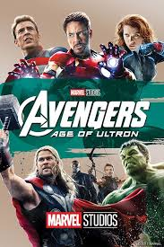
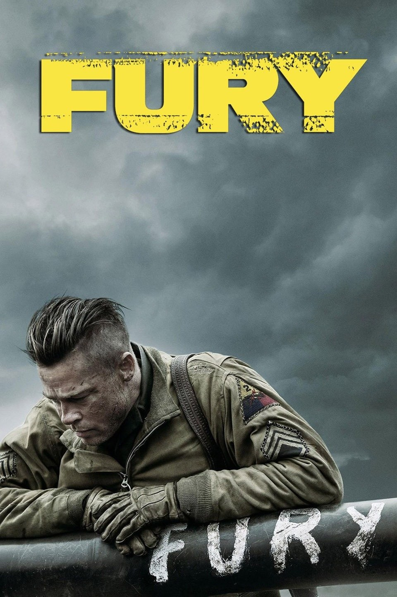
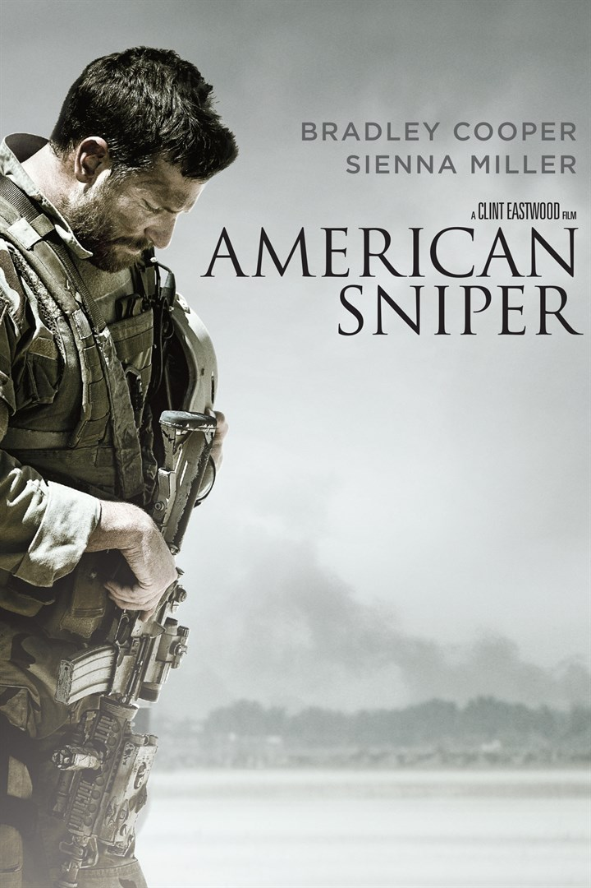

| Movies | Info | Ratings |
|---|---|---|
|  Avengers: Age of Ultron |
Synopsis: When Tony Stark jump-starts a dormant peacekeeping program, things go terribly awry, forcing him, Thor, the Incredible Hulk and the rest of the Avengers to reassemble. As the fate of Earth hangs in the balance, the team is put to the ultimate test as they battle Ultron, a technological terror hell-bent on human extinction. Along the way, they encounter two mysterious and powerful newcomers, Pietro and Wanda Maximoff. Cast:
Director: Joss Whedon Runtime: 141 minutes Rating: ⭐⭐⭐⭐ |
Larushka Ivan-Zadeh: "Avengers Age of Ultron is one of the weaker entries in the MCU. Its pacing is all over the show, there's a lack of any serious character development, the questionable CGI gives action scenes an unrealistic look and the dialouge is pretty average or cheesy. It serves the purpose of introducing us to new key characters of the franchise such as Wanda (Scarlet Witch), Ultron and Vision plus some other less important, but no less integral, individuals such as Pietro (Quicksilver), Ulysses Klaw and F.R.I.D.A.Y. Outside of that though, it's an easily forgettable chapter of the MCU. It doesn't have the relaxed fun of the first Avengers film nor the scope and intensity of the 3rd and 4th. " Julián Lado: "Spoiler free review. Let me first start of by saying that I am not a Marvel ''fanboy'' or a DC nerd. The comic book genre of films have made it to my personal top 3 favourite genres in the last decade and the MCU has been a strong contributor to that rise. I hold the first Ironman, first Avengers and Captain America 1+2 in high regard. I did not like the direction they took with Iron Man 3 (more on this below) or Guardians of the Galaxy but Winter Soldier was a gem in terms of balancing solid action, drama and levity. " Mohau Telite: "Tony Stark and his group of amazing friends cross paths with the son of Megatron and Skynet in a new adventure. In 2012, the world was introduced to the epic crossover of comic book heroes in "The Avengers." Three years later, a new villain emerges - Ultron, a wisecracking artificial intelligence with a god complex and a sidekick duo of Scarlet Witch and Quicksilver. The Avengers must band together once again to save the world from destruction and prevent the ushering in of THE AGE OF ULTRON." |
|  Fury (2015) |
Synopsis: In April 1945, the Allies are making their final push in the European theater. A battle-hardened Army sergeant named Don "Wardaddy" Collier, leading a Sherman tank and a five-man crew, undertakes a deadly mission behind enemy lines. Hopelessly outnumbered, outgunned and saddled with an inexperienced soldier in their midst, Wardaddy and his men face overwhelming odds as they move to strike at the heart of Nazi Germany. Cast:
Director: David Ayer Runtime: 134 minutes Rating: ⭐⭐⭐⭐ |
Howard Davidson: "An old-fashioned war picture to rule them all - gripping, utterly uncynical, with viscerally convincing and audacious battle sequences." Brent Parkinson: "Fury. It cements David Ayer's reputation as one of the seminal filmmakers of the era." Myer Colt: "Fury’s most impressive and lasting feat remains its ability to remind us about the soldiers we lost — and more importantly, who they were as human beings." |
|  The American Sniper |
Synopsis: U.S. Navy SEAL Chris Kyle takes his sole mission -- protect his comrades -- to heart and becomes one of the most lethal snipers in American history. His pinpoint accuracy not only saves countless lives but also makes him a prime target of insurgents. Despite grave danger and his struggle to be a good husband and father to his family back in the States, Kyle serves four tours of duty in Iraq. However, when he finally returns home, he finds that he cannot leave the war behind. Cast:
Director: Clint Eastwood Runtime: 132 minutes Rating: ⭐⭐⭐⭐ |
Thomas Vandeberg: "I find this movie an amazingly true story of an american hero that sacrifices everything just to protect his comrades. Clint Eastwood knocked it out of the park on this movie, in the beginning you see a young, rowdy, wanna-be cowboy that is drawn to military service by a terror attack he sees on television. Going through Navy SEAL training, which is some of the hardest training in the world, then becoming a sniper can only lead you to one place....the front." Free Dorch: "Great story about one of our good solidiers comes home safely for someone to take his life away from him, that sickening!! Our soldiers when they come they should be safe and we should be very greatful for serving, but that be unsaid because "Some" certain people don't care our soldiers I believe are used as pawns - you will never see a political person or family member put their life in danger on the front lines... Chris Kyle should always be remembered and all anyone that is a fallen soldier or even wounded! They have given their life for this country!!" Bearded Ringo: "Bradley Cooper is one of the best actors so there's that. This movie is odd, it's like a military requirement movie. The dialog is lame and the whole idea that as Americans we need to blindly kill people and be racist towards, as the movie refers to them "savages", is such an outdated and closed minded way of thinking. Trust me I appreciate and respect those who serve but this movie almost seemed like they wanted us to know that just because these guys are in the military doesn't mean they're good humans. It's hard to tell what Eastwood was going for, most of the men were so eager to kill, which is psychotic, and they were blatantly racist towards the people they were fighting. And way to make the punisher logo a symbol of hate, the punisher was about a guy who was a vigilante so its ironic that military people use it. |